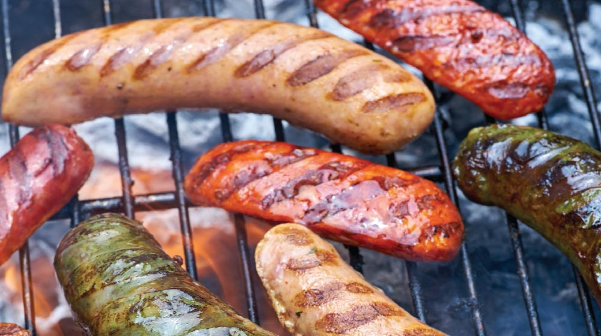

CHORIZOS AL GRILL
ESTOS CHORIZOS AL GRILL NO PUEDEN FALTAR EN TU PRÓXIMA PARRILLADA. TE DECIMOS CÓMO ASARLOS PARA QUE TE QUEDEN ¡SIMPLEMENTE PERFECTOS!.
Posted by Lacayos Gaming on April 10, 2021
Tiempo: 30 minutos
Porciones: 4 porciones
Posted by Lacayos Gaming on April 10, 2021